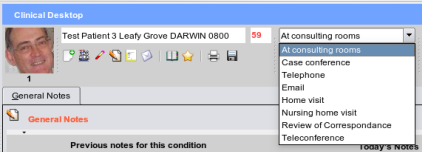

Consultation Types
For medico-legal reasons the type of consultation should always be set - for example, you may be having
a phone conversation with the patient, or be part of a conference, and we need the notes to reflect this.
On the main toolbar you will notice the consultation type combo box:

When progress notes are viewed, the type of consultation will be shown for the particular day's notes.
Should you need extra types of consultation please consult the developers and they can be added to the combobox.
There is a 'hidden' consulation type - that of 'legacy data import', so that you will be able to recognise any data that was not
generated in EasyGP